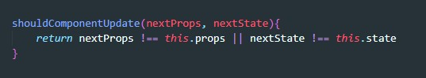

У нас есть компонента которая внутри себя отрисовывает две дочерние компоненты. Если внутри первой дочерней компоненты произошли какие-то изменения (вернее участок state данные которого отображались в первой компоненте изменились), то отрисовка произойдет и первой дочерней компоненты и второй. Нам же надо сделать так что бы вторая компонента не перерисовывалась, если пропсы которые в нее пришли из state не изменились
shouldComponentUpdate - это метод жизненного цикла, он срабатывает перед попыткой отрисовать компоненту. Метод возвращает булевое значение, если она вернет false то перерисовка не произойдет. Метод может принимать три ргумента, интересные только первые два - nextProps и nextState - это пропсы и state которые придут перед перерисовкой. Их можно сравнить с тем что уже есть в компоненте и если они не отличаются то можно вернуть false и тогда перерисовки не произойдет. Зачем перерисовывать те же данные. Вот как будет выглядеть этот метод
Предыдущую проверку можно не писать если наша классовая компонента наследуется от PureComponent. Т.е. объявление классовой компоненты выглядит вот так:
Предыдущие способы оптимизации подходят только к классовым компонентам, для функциональных компонент используется ХОК - memo. Объявление классовой компоненты выглядит вот так:
Т.е мы обращаемся к библиотеки React и вызываем метод memo, на вход методу даем функцию, которая будет отрисовывать наш JSX